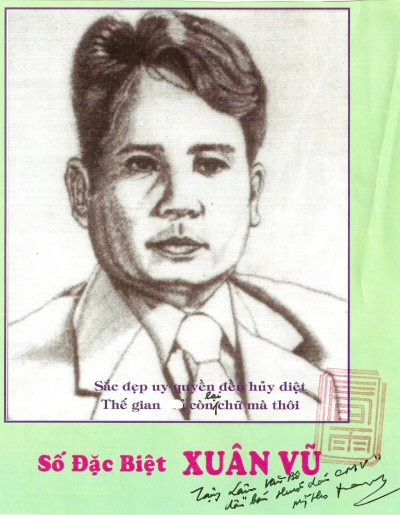

Chương Hai

uân Vũ viết về cuộc xâm lăng của Cộng Sản Bắc Việt; bọn chúng vượt Trường Sơn để vào đánh phá và cưỡng chiếm Miền Nam Việt Nam. Xuân Vũ viết tiểu thuyết đồng quê về cuộc đất Nam Kỳ vào thời tiền chiến. Xuân Vũ đặt thơ lai rai nhưng không cho xuất bản thành sách.

Anh là một cây bút sáng tác có sức mạnh vũ bão nhất, có vốn liếng đi và sống phong phú nhất. Sách anh bán chạy thuộc hàng đầu, tạo cho anh một ngôi vị cao chót vót và lộng lẫy nguy nga, làm vẻ vang cho tập đoàn các cây bút gốc Nam Kỳ từ trong nước, trước năm 1975 và các cây bút gốc Nam Kỳ ở bốn phương trời hải ngoại.
Chưa hết đâu. Xuân Vũ còn moi móc tài liệu trong các xó xỉnh của lịch sử cận đại để viết quyển tiểu thuyết nửa sống thực nửa giả tưởng về cuộc đời một danh kỹ sắc nước hương trời chói rạng Hòn Ngọc Viễn Đông và lan ra khắp ba miền Nam Bắc Trung. Đó là cô Trần Ngọc Trà mà thời nhân gọi là cô Ba Trà, còn giới ăn chơi gọi cô là Yvette Trà và báo giới gọi là Huê Khôi Nam Kỳ, là Ngôi Sao Sài Gòn.
Cô Ba Trà khi chui vào tác phẩm truyện dài của Xuân Vũ có một cuộc đời như sau: Má cô xuất thân từ một gia đình khiêm tốn và thanh bạch. Cha cô xuất thân gia đình khá giả, có lễ giáo. Nhưng cha cô hay ghen. Tình cờ ông ta bắt được thư rơi cho biết má cô ngoại tình với một kẻ khác mới sanh ra cô. Thế là vì ghen tương, ông ta thổ huyêt, rồi hành hạ vợ. Má cô không chịu nổi sự rẻ rúng và sự trừng phạt của chồng nên đưa cô về tá túc ở quê ngoại cô. Nhưng ông bà ngoại không chứa mẹ con cô.
Túng thế, má cô gá duyên với ông Khách trú xấu xí, làm nghề mở tiệm hút thuộc phiện lậu. Vì thù hận người chồng cũ nên má cô ghét bỏ cô, đày xắc và hành hạ cô rồi bán cô cho người Chà-và để lấy 400 đồng qua trung gian mụ tú bà mà tác giả gọi là dì Hảo. Khi tên Ấn kiều về nước, dì Hảo dàn cảnh để gả cô cho con trai một nghiệp chủ Hoa kiều giàu sụ nhờ nghề buôn cá phơi khô. Nhưng người Tàu vốn ưa lấy vợ còn trinh, cho nên cậu con ông nghiệp chủ kia dù có mê say nhan sắc cô Ba Trà, nhưng vẫn bị sự mất trinh của cô trước khi về làm vợ hắn ám ảnh hoài hoài nên hắn đâm ra khinh khi cô và cặp xách với nhiều cô gái đẹp khác. Cô Ba Trà bỏ trốn và về tá túc nhà dì Hảo.
Dì lập mưu lập kế để đưa cô vào nghề mãi dâm. Dì gạt gẫm cô để cô bị lính kiểm tục băt giam, rồi tống cô đi khám bịnh phong tình (đi lục xì) tại nhà thương Bạc Hà tức là bịnh viện bài trừ bệnh hoa liễu. Đó là cách rúng ép cô ký giấy giao kèo hành nghề mãi dâm, để biến cô thành con điếm có môn bài ( une fille publique cartée). Thời may, cô đuợc ông bác sĩ bệnh viện đứng tuổi cứu giúp cô thoát khói lưới bẫy của mụ đàn bà bất lương kia. Rồi cô trở thành tình nhân ông ta.
Trong cuộc thi sắc đẹp tại Sài Gòn, ông ta có đưa cô đến xem. Ai ngờ cô gái dự thi trúng giải hoa hậu tên Lê thị Liễu lại xin nhường chức nữ hoàng các mỹ nhân cho cô. Ban giám khảo không biết tính sao vì lời đề nghị cô Liễu sái nguyên tắc. Rồi theo lời quan Biện Lý Thành Phố (người Pháp), họ chỉ bằng lòng tặng cho cô Ba Trà cái danh hiệu Ngôi Sao Sài Gòn. Tên tuổi cô bắt đầu lừng lẫy từ đó.
Ông bác sĩ nhân từ kia lại muốn cô Ba được kết hôn với kẻ xứng lứa vừa đôi nên bằng lòng nhường cô lại cho người con trai ông giám đốc Đông Dương Ngân Hàng thuộc chi nhánh ở tỉnh Cần Thơ. Nhưng anh ta có vợ nên khi công việc bí mật đổ bể, hắn phải hủy hôn với cô. Cô lại được một họa sĩ nghèo say mê, chọn cô làm tình nhân kiêm người mẫu.Thế rồi tranh có vẽ chân dung cô đưọc trưng bày tai Đại Lục Lữ Quán do cựu danh kỹ Tư Hồng Mao cai quản. Cô Tư này còn gọi là Tư Ăng-lê vì theo lời đồn chồng của cô ta là người Anh-cát-lợi.
Những bức tranh này bị cô Tư Hồng Mao làm trành làm tréo sang đoạt, rồi lại được Bạch Công Tử mua hết. Bạch Công Tử tên là Lê Công Phước mà thời nhân gọi là Phước Georges. Cậu vốn là con quan Đốc Phủ Sứ Lê Công Sủng ở Mỹ Tho vốn là đại điền chủ. Quan Đốc Phủ Sủng ngoài những bât động sản to tát khác, còn là chủ nhân Cù Lao Rồng, thuộc hạng tiền rừng bạc biển.
Trong dịp tiếp đón quan Thống Đốc Nam Kỳ tại Đại Lục Lữ Quán có đại điền chủ Trần Trinh Trạch, đại thương gia Quách Đàm (người Tàu), thì cô Ba Trà xuất hiện ký tên tặng tranh cho quan Thống Đốc. Từ đó, tên tuổi cô Ba Trà vang lừng khắp Đông Dương. Cô được chuyền từ tay Bạch Công Tử rồi sang tay Hắc Công Tử và tay Sáu Ngọ...
Hắc Công Tử tên là Trần Trinh Qui, con ông Hội Đồng Quản Hạt Trần Trinh Trạch. Ông Trạch là chủ nhân 20.000 mẫu ruộng lúa và 2.000 mẫu ruộng muối ở Bạc Liêu. Còn Sáu Ngọ là vua các sòng bạc ở Sài Gòn và ở các thành phố vùng phụ cận Sài Gòn có thể tặng nhiều lần cho cô Ba rất nhiều tiền, mỗi lần gồm cả bao to đựng giấy bạc. Ông ta còn tặng cho cô kim cương thuộc loại hảo hạng nữa.
Cô Ba còn được ông Hoàng Ngự Đệ bên nước Xiêm La đề nghị cưới cô làm vợ, nhưng cô không ưng. Trong thời gian làm việc ở Đại Lục Lữ Quán, có cô danh kỹ Tư Nhị từ Nam Vang xuống xin làm em kết nghĩa với cô Ba. Lại thêm cô Quế Anh vừa đẹp vừa có học thức, cô đầm rặc Danielle vốn là em chồng cô Tư Hồng Mao cũng nhập bọn đàn em cô Ba. Chính Tư Nhị dạy cô Ba dùng ngãi nghệ để rù quến khách tìm hoa.
Thế rồi trong chuyến theo Bạch Công Tử ra viếng Hà Nội, cô Ba gặp cô Đốc Sao nổi tiếng là nữ hoàng sắc đẹp trong giới hát ả đào ở khu phố Khâm Thiên. Nhưng trước đó không lâu, cô Đốc Sao giải nghệ để kết hôn với nhà báo Hoàng Tích Chù. Tuy ông ta không giàu có gì, nhưng có thể xây dựng cho đương sự một đời sống lứa đôi hạnh phúc, một cuộc hoàn lương vững vàng.
Gặp cô Ba Trà, cô Đốc Sao khuyên cô nên tìm cách xa lánh cuộc đời bán dạng thuyền quyên để sau này tránh khỏi thảm cảnh bị khách tìm hoa bỏ rơi khi hương phai phấn lợt. Rồi cô Ba Trà gặp tên thầu khoán giàu sụ cưới cô làm "vợ hờ", xây cất cho cô một chốn ăn chơi đồ sộ và huy hoắc tên Nguyệt Tiên Cung. Nơi đây, cô tuyển lựa các giai nhân mỹ nữ để tiếp khách thuộc hạng tiền giàu nức vách đổ tường.
Nhưng thét rồi cô đâm ra chán ngán cuọc sống dật lạc. Bỗng cô sực nhớ lời khuyên cô Đốc Sao nên cô tìm một người chồng công chức bậc trung, lương tháng 120 đồng. Chàng rất thành thật và chất phác. Đó là thầy Cò-mi họ Vương, người đã yêu cô từ khi chàng hãy còn là học sinh trường Pétrus Ký và đã từng chiêm ngưỡng hình cô chưng tại tiệm Saigon Photo.
Thế là cô Bà Trà vì muốn che đậy cái dĩ không đẹp của cha mẹ mình và cái thân thế điếm nhục của mình nên tạo ra cuộc đám cưới có cha giả mẹ giả, mà bà mẹ không ai khác là dì Hảo. Dì này sau khi để cô Ba Trà vuột khỏi tay mình, bị chồng bội bạc, chịu cảnh nghèo vô gia cư, vô định sở nên túng thế đến Nguyệt Tiên Cung tìm cô Ba và được cô dung thứ, nuôi duỡng tử tế.
Về sống với Vương ít lâu, cô Ba Trà mời mẹ và hai em chàng lên ở chung. Cô tìm được hạnh phúc trong cảnh làm vợ hiền, dâu thảo, và chị dâu tử tế... Nhưng ông cậu vợ phát giác được tung tích của cô Ba Trà và tung tích cha mẹ giả của cô nên ông ta xuối mẹ của Vương tìm cách cắt đứt duyên chồng vợ chồng của cô.
Thế là cô ra đi, rồi trở về Nguyệt Tiên Cung với niềm tuyệt vọng. Cô dùng độc dược để quyên sinh. Đoạn cuối, cô được tỉnh dậy, nhưng tác giả không cho độc giả biết cô có đưộc cứu sống hay không? Hay là có phải đó là phút hồi dương ngắn ngủi để rồi sau đó cô khép mắt thả hồn vào giấc ngủ thiên thu? Tác giả để mặc cho độc giả đoán già đoán non ra sao cũng được
Thật ra, trong tiểu sử của cô Ba Trà, thì cô được cứu sống để rồi rước khách, để rồi thua bạc nhiêu lần, rồi tự vận mấy phen nữa. Rồi có một lần, cô ăn bạc to. Lần này cô xuất tiền ra tìm một người chồng trẻ hơn cô rất nhiều tuổi, chẳng những đẹp trai mà lại có học thức, có tư cách. Anh ta tuổi Thìn, nên cụ Vương Hồng Sển trong cuốn "Sài Gòn Tả Pín Lù" gọi là Thìn để giấu tên thật của đuơng sự. Nhưng cuộc sống lứa đôi của cặp vợ già chồng trẻ không bền.
Sau đó, Thìn qua Pháp du học. Còn cô Ba Trà gá duyên với ông Trưởng Tòa Trương Văn Tỷ cũng thuộc hạng Vương Khải, Thạch Sùng. Cô tiếp tục đánh bạc cho tới khi nhan sắc héo úa, phải bỏ nhà ông Tỷ và mai danh ở tích ở nơi cùng thôn tuyệt tái bí mật nào đó. Cho nên từ đó về sau, kẻ quen biết coi cô như bóng chim tăm cá, không tìm gặp được dấu tích của cô.
° ° °
Ở bài "Đôi Lời Tác Giả" trong quyển truyện dài "Cô Ba Trà"xuất bản vào năm 1996, Xuân Vũ cho biết:
Cô Ba Trà sinh năm 1906, cách đây gần 100 năm. Sắc đẹp của cô được các nhà văn nhà báo mô tả như "Ngôi sao Sài Gòn" (Étoile de Saigon) hoặc "Huê khôi Nam Kỳ"; người tình của Cô Ba cũng là những nhân vật thật như các đại điền chủ, đại công tử như cậu Tư Phước Georges biệt hiệu Bạch Công Tử, con trai quan Đốc Phủ Sứ Lê Công sủng, chủ nhân Cù Lao Rồng ở Mỹ Tho, cậu Ba Qui biệt hiệu Hắc Công Tử con trai của đại điền chủ Trần Trinh Trạch ở Bạc Liêu mà Thống Đốc Nam Kỳ goị băng Papa (bố).
Bên cạnh hai công tử kể trên còn có công tử Bích, con chủ nhà băng Đông Dương (chi nhánh Cần Thơ) một người dám cho cô Ba 70.000 đồng trong lúc lúa 2 cắc 1 giạ. Các đại trí thức như quan tòa Trần Văn Tỷ, Thầy Kiện Dương văn Giáo, Bác Sĩ Lê Quang Trinh, Nguyễn Văn Áng, Vua Cờ Bạc chủ các sòng bạc Sài Gòn: Sáu Ngọ v. v... Đó cũng là những nhân vật lịch sử như cô Ba đã tạo nên những giai thoại được ngưòi đời truyền tụng cho đến ngày nay.
Sở dĩ tôi nói vòng vo Tam Quốc như vậy là để xin thưa lại một điều này: Viết về Cô Ba Trà DỄ mà KHÓ. Dễ là vì cốt tượng cũ mỹ nhân đã có sẵn, chỉ cần tu bổ sơn phết lại là thành bức tượng. Nhưng làm sao cho bức tượng hoạt động, nói năng như người thật hoặc trở thành người thật? Cũng không khó.
Cái khó là mỹ nhân đó phải là Cô Ba mà không được ai khác. Đọc sách xong, độc giả phải nghĩ đó là cô Ba chứ không ai khác thì mới được. Người viết tiểu thuyết về Cô Ba - nói nôm na, giống kẻ chèo đò giữa hai bờ sông, một bên là SỰ THẬT, một bên là BIA ĐẶT (nói theo văn học là sáng tạo, hư cấu). Phải chèo cách nào cho người ngồi trên xuồng thấy cây cỏ bên này lẫn đồng ruộng bên kia. Muốn làm cho khách hài lòng kẻ chèo đò không được đụng bờ bên này hoặc chạm bờ bên kia sẽ bể mũi xuồng, mà phải luôn luôn chèo giữa dòng.
(các trang 10, 11)
Đúng vậy, Xuân Vũ kiến trúc nhân vật Trần Ngọc Trà thật tinh vi, thật sống động, dù đôi lúc vì cao ứng anh pha chút xíu cường điệu đi nữa. Nhưng phần cốt lõi, anh tương đối thành công.
Sau đây là cảnh Tư Nhị giúp Ba Trà đưa bùa ngải vào thân thể:
-... Còn bùa nầy nữa. Em chỉ chuộc đuợc có một ít thôi, em nhường cho chị. Chị vén bắp vế lên đi.
- Chi vậy?
- Để em vẽ bùa rồi đeo. Ông thầy ổng không cho một miếng vải dính da em. Ổng vẽ bùa khắp người em, mà ổng vẽ bằng lưỡi. Lưỡi ổng tẩm ngải chị ơi! Ổng vẽ tới đâu em nghe nóng rực tới đó, nhứt là ổng vẽ gần tới đây. Em rùng mình, ổng nói đó là ngải nhập vô mình em rồi.
- Xí, vẽ bùa mà bằng lưỡi, thuở nay tao mới nghe!
- Chị vén bắp vế lên đi, em vẽ bằng tay thôi. Em nói rõ tên tuổi của chị rồi ổng dạy em để về truyền lại cho chị. Chị hổng tin bùa ngải thiệt hả?
Trà ngồi im. Nhị lại moi thêm một lá bùa, nói:
- Để em đọc thần chú vô bùa thử, chị có tin không?
Nói xong bèn bắt ấn quyết, hớp một hơi khí thổi vào mặt Trà và lâm râm đọc:
Tam nguyên chi hạ, hình ảnh du du
Giai nhân cử bộ giản phàn du du
Ngô lịnh do nhữ vô kế khả câu
Suy khí nhất khẩn, lõa thể xuất tu
Ngô phụng: tam sơn cửu hầu tien sinh luật lịnh niếp.
Xong rồi lấy bùa buộc vào lưng Trà, bảo:
- Chị ngồi yên nghe bùa nhập!
Xong Nhị lập lại câu thần chú đến lần thứ 9 thì Trà bắt đầu thấy ngứa ngáy. Nhị quơ tay hít thở phù phù vào ngực vào lưng Trà liên tục. Trong chốc lát Trà vùng đứng dậy chầm chậm cởi lưng nút áo, tuột áo vứt xuống đất rồi ôm chầm lấy Nhị. Nhị tiếp tục đọc thần chú và làm phép.. Chỉ một thoáng sau, Trà hoàn toàn lõa thể và làm những cử chỉ ân ái với Nhị như với nam giới. Nhị thấy thân hình Trà tuyệt diệu thì vồ vập và rên rỉ:
- Chị ba ơi! Sao chị đẹp làm vầy! Em còn phải mê huống hồ đàn ông! Chị
để em thưởng thức chút nghe! Kẻo để người ta chiếm hết thì uổng quá!
Và Nhị ắt đầu vẽ bùa theo kiểu ông thầy. Từ trên núm cặp đào tiên xoáy vòng khu ốc hồi lâu rồi vạch một đường ngoằn ngoèo xuống đúm cỏ xanh ngăn ngắt và dừng lại hai mép ngọc tuyền. Trà đang đê mê bỗng kêu lên:
- Em làm... gì vậy... Nhị?
- Chị để e...em coi chú..út!
- Coi cái gì?
- Coi chị có ngọn "cỏ hồng" mọc ngược như của em không?
- Cỏ gì mọc ngược?
- Chị mở mắt ra coi nè...! Chị không có "cỏ hồng" nhưng có nốt ruồi ở một bên, thấy chưa?
- Thôi đi! Mày làm tao phát khùng lên! Buông tao ra!
Miệng Trà nói vậy nhưng tay lại ôm đầu Nhị không buông, nên Nhị cứ tấn tới. Nàng nói:
- Con Quế Anh nó có nốt ruồi bên trái, còn chị bên phải. Em không biết nó
nghĩa gì? Để bữa nào em đi hỏi mấy ông thầy tướng.
(các trang 417, 418)
Cái pha hai cô danh kỹ từ trước đã giao hợp với đàn ông, bây giờ làm tình với nhau thì đối với độc giả hơi vô lý. Nhưng mà vào Thời Đại Mỹ Lệ (thập niên 10 của Thế kỷ 20), hai nàng danh kỹ thượng thặng là Liane de Pougy và Émilienne d'Aleçon đã từng ăn nằm với các vua chúa, các nhà quý tộc, các kỹ nghệ gia Mỹ thuộc hạng tỷ phú, triệu phú.
Thế mà họ có nhiều dịp ăn nằm với đàn bà. Có thể họ là những kẻ lưỡng tính luyến ái (les bisexuelles) chẳng những xơi tái đàn ông mà còn thiếm xực cả đàn bà. Có lẽ ở thể chất họ có cái gène dị tính luyến ái (l'hétérosexualité / thích làm tình với kẻ khác phái tính) và có luôn cái gène đồng tính luyến ái ( l'homosexualité / thích làm tình với kẻ đồng phái tính) chăng? Dù gì thì dù, đây là thứ cường điệu thật dễ thương, pha một chút huơng vị nồng mặn của tình dục.
Ngoài ra, cuộc sống tình cảm, tính nết, nhân sinh quan của nhân vật Ba Trà đều được tác giả khai thác chăm chút. Xã hội hoặc nghiệp lực gì đó đã đưa đẩy cô vào xã hội ăn chơi trác táng, nhưng thật ra cô la người phụ nữ có thiên lương có tấm lòng rộng rãi với kẻ giúp việc, với người khốn khó. Ngoài ra, cô không thù dai những kẻ xô cô vào cạm bẫy đoạn trường, không oán cha oán mẹ dù mẹ cô đày đọa cô rồi bán đứng cô.
Lúc nào cô cũng muốn về sống với mẹ. Trong truyện, Xuân Vũ thêm một vận sự như sau: có một ông già đến nhận là cha thật của cô. Đương sự vốn là bạn của cái người gọi là chồng đầu tiên của mẹ cô Đương sự say mê mẹ cô khi mẹ cô chưa xuất giá. Rồi vì thấy người mình yêu trở thành vợ của bạn mình nên đương sự tức tối muốn chiếm đoạt lại mẹ cô nên dùng bùa ngải cốt để gây cho vợ chồng mẹ cô xào xáo nhau, rồi dụ dỗ mẹ cô bỏ nhà theo đương sự.
Nhưng bùa ngải vô hiệu nghiệm nên đương sự dùng thơ nặc danh để phá cuộc hôn nhân của mẹ cô. Ở đây, tác giả thuật chuyện rất mơ hồ, độc giả không hiểu đương sự làm cách nào để giao hợp với mẹ của cô Ba Trà và để bà sinh cô ra vì bùa ngải vô hiệu nghiệm, mẹ cô đâu có dịp nào gặp đương sự. Tuy nhiên, đương sự tìm gặp cô Ba Trà để thú tội ăn năn trước khi dọn linh hồn chờ ngày chết thì vẫn được cô tha thứ, được cô gọi bằng ba và được cô chầm lấy khóc sướt mướt. Như vậy, dù là kẻ chỉ biết đục đẻo tiền bạc của khách làng chơi, nhưng cô vẫn là người có tấm lòng vàng ngọc, có tâm hồn bao la, có trái tim mẫn cảm.
Ngoài ra, cô Ba Trà là kẻ biết người biết ta, có sự công bình từ trong tư tưởng ra ngoài hành động. Sau đây là câu chuyện tâm tình giữa Ba Trà và Tư Nhị sau chuyến Ba Trà đi viếng thăm Hà Nội trở về Sài Gòn:
Trà vui vẻ trở lại:
- Ở ngoải có nhiều người đạp ghê mầy à!
- Mấy người mà nhiều?
- Để coi nè! Cô Bạch Yến, cô Thục Oanh, cô Thái trắng Lô Lô, cô Bùi Tuông, cô Chinh, cô Mường Vin. Nhưng tao cho rằng cô Đốc Sao đẹp nhất. Tao chưa thây ai đẹp bằng.
- Đẹp như thế nào? Đẹp bằng chị không?
- Tao chỉ đứng dưới gót người ta thôi. Nét đẹp của chỉ tao không nói được.
- Sao không rủ bả vô trong nầy nhập bọn với mình cho vui?
- Người ta có chồng con, ai đi lang thang như mình mà rủ? Gặp chỉ tao hết muốn cái cảnh nầy rồi.
- Bộ chị muốn chồng lắm hả?
- Con quỉ nầy!
- Thì thộp ông Hoàng Xiêm La đi. Muốn chồng mà ai cũng chê hết ráo!
- Không phải tao chê mà người ta có vợ.
- Vậy mấy cậu Ba, cậu Tư, thầy Sáu không có vợ sao?
- Mấy ổng có đòi cưới tao bao giờ đâu! Họ chỉ xạo qua đường.
- Chị hổng chịu sao chị cứ đi chơi với người ta hoài?
- Đi thì đi, bộ mầy tưởng hễ đi với ai là ưng người đó làm chồng à?
- Vậy ông thầu khoán muốn cưới chị, cất nhà, mua nhà hàng cho chị thì sao?
- Ổng mua nhà hàng, xây nhà cho tao là vì ổng muốn dùng tay tao hốt bạc cho ổng, hơn nữa ổng cũng có vợ con dùm đề rồi chớ phải tay trơn đâu mà tao nhào vô!
- Thì chị bảo ổng thôi vợ phức đi!
Trà lõ cặp mắt:
- Chuyện thất đức như vậy mà mầy bảo tao làm à? Hồi trước chồng tao có
vợ bé tao biết ghen, tao tìm tới ẩu đả một trận, bây giờ tao lại đi quơ chồng người ta sao? Của mình ôm tro tro, của người lấy mo mà hốt. Ở đời sao có chuyện lạ vây?
- Chị đi ngoài đó kỳ nầy bị ông nào bỏ ngải rồi, nên ca Xàng Xê câu nào
cũng đâm hơi hết.
(các trang 423, 424)
Viết một quyển tiểu thuyết một ngoại sử hay một quá khứ có thật, Xuân Vũ cũng đã tốn công tra cứu biết bao tài liệu lịch sử Xin đọc ở trang 490 tức là trang cuối của quyển "Cô Ba Trà", chúng ta sẽ thấy những gì đã cung cấp cho tác giả hoàn thành văn phẩm ấy?
Chân thành cảm tạ các vị cho tôi nguồn tài liệu phong phú sau đây để viết quyển sách này:
1 -"Nam Hải Dị Nhân" của Phan Kế Bính,
2 -"Hơn nửa đời hư" của Vương Hồng Sển,
3 -"Năm mươi năm mê hát" của Vương Hồng Sển,
4 -"Sài Gòn tả pín lù" của Vương Hồng Sển,
5 -"Nam Kỳ lục tỉnh I" của Hứa Hoành,
6 -"Nam Kỳ lục tỉnh II" của Hứa Hoành,
7 -"Nam Kỳ lục tỉnh III" của Hứa Hoành,
8 - "Nam Kỳ lục tỉnh IV" của Hứa Hoành,
9 - "Sau bức cấm thành nhà Nguyễn" của Hứa Hoành,
10-"Bùa mê ngải lú" của Lê văn Lân,
11 "Văn minh miệt vườn" của Sơn Nam,
Và thơ riêng của Hứa Hoành, Hồ Trường An, Lê văn Lân.
Tôi không biết nhà văn Nguyễn Triệu Luật khi viết "Bà Chúa Chè" (tức là Tuyên Phi Đặng Thị Huệ), "Chúa Trịnh Khải" cùng nữ sĩ Mộng Tuyết Thất Tiểu Muội khi viết "Nàng Ái Cơ Trong Chậu Úp" (tức là bà Nguyễn Phù Cừ, sủng thiếp của Tông Đức Hầu Mạc Thiên Tứ) lấy tài liệu ở đâu mà viết thật sống động từ bối cảnh lịch sử, đến chuyện trong triều chính, trong quân cơ, trong lễ lạc tế đàn, trong thâm cung lẫn trong hương khuê tú các.
Nguyễn Triệu Luật và nữ si Mộng Tuyết viết tỉ mỉ hơn, văn chuơng hơn anh Xuân Vũ. Bất cứ chi tiết lịch sử nào khi được họ miêu tả cũng được chăm sóc kỹ lưỡng và đào sâu hơn. Việc làm của họ cũng giống như việc làm của nữ sĩ Kathleen Windsor (người Anh) khi viết quyển "Ambre" ( "Nàng Hổ Phách"). Bà nữ sĩ này đã bỏ ra hằng năm sưu tầm và nghiên cứu tài liệu lịch sử và bối cảnh dưới triều đại vua George Đệ Nhị của Anh Quốc.
Tài liệu trong quyển "Cô Ba Trà" qua các biến chuyển, các vận sự quá tươi rói, quá phồn thịnh, nhưng hơi tiếc một điều là Xuân Vũ trám vào sách quá nhiều cuộc đối thoại dí dỏm, những vận sự trào lộng nên không có thời giờ đào sâu và mổ xẻ những điều thâm thúy một cách chi ly, tỉ mỉ.
Vào thập niên 10 ở Sài Gòn hoa lệ, ngoài cô Ba Trà là nữ hoàng trong hàng danh kỹ, còn có thêm 3 vương hậu trong giới ăn chơi (société demi- mondaine) như Tư Nhị, Hai Thời, Sáu Hương. Nhưng Xuân Vũ chỉ nói tới cô Marianne Tư Nhị, tuy nhiên trong tác phẩm của Xuân Vũ, vai trò cô Tư chỉ là vai phụ, không mấy đặc sắc.
Cô ta theo phò tá cô Ba Trà, cười đùa giỡn hớt nhộn nhàng mà không có cuộc sống riêng tư, không có một tiểu sử huy hoàng trong việc chài bẫy các vương tôn công tử. Ngoài ra, Xuân Vũ còn thu hẹp vai trò của cô Tư Ăng-lê. Cô ta vẫn còn có một cuộc sống riêng tư rất sôi nổi, làm tổn thương biết bao con tim say mê cô ta. Bằng cớ là Bạch Công Tử Phước Geoges ăn ở với nữ minh tinh kịch trường Bảy Phùng Há, sau đó say mê cô Tư Ăng-lê, không ngó ngàng tới gánh hát Huỳnh Kỳ mà ông ta gầy dựng cho cô Bảy.
Ông ta bỏ mặc luôn hai đứa bé gái song sinh của ông ta và của cô Bảy đang vật lộn rồi đầu hàng với Tử Thần trong cơn bịnh thương hàn. Khi Nhật đảo chính Pháp để chiếm ĐôngDương, Cô Tư Ăng-lê cặp xách với nhiều công chức cao cấp cùng các tướng cá tá của Nhật.
Nhân vật Quế Anh vẫn là một gái giang hồ phóng đảng, tuy thuộc hạng tân học, lại biết làm thơ thất ngôn bát cú một cách rựa ràng. Nhưng nhan sắc cô ta chỉ giúp cô ta quyến rũ các công chức bậc trung thôi. Nếu không nhờ một thời dan díu với học giả Vương Hồng Sển, được họ Vương đua vào quyển "Năm Mươi Năm Mê Hát" thì làm sao có ai biết tới cô ta?
Dù gì thì dù, đã là viết tiểu thuyết, tác giả có thể bỏ người này, viết thả giàn cho người kia. Nhưng một khi đã biến họ thành nhân vật trong tác phẩm mình, thì tác giả phải chăm sóc họ, ban cho họ một đời sống đặc thù, dù họ là nhân vật chánh hay nhân vật phụ đi nữa. Độc giả sành điệu sẽ rất tiếc không được theo dõi hành trình của cô Tư Ăng-lê, của cô Marianne Tư Nhị hay của cô Quế Anh.
Trừ cô Tư Ăng-lê ra, Marianne Tư Nhị và Quế Anh vì quá truy hoan trác táng nên hương sắc chóng phai tàn. Cô Tư Nhị phải đi ăn mày, tay chân đầy ghẻ lở. Còn cô Quế Anh trở nên khật khùng, nhưng cô vẫn còn sáng suốt, không trở lại ông Vương Hồng Sển để được ông bao che, đùm bọc. Cô sợ cuộc đời lầm lỡ xấu xa của mình phương hại đến cuộc đời vẻ vang của người yêu nên cô rời khỏi Sài Gòn và chui rút ở một xó xỉnh tối tăm nào mà giới phong lưu của thủ đô hoa lệ Sài Gòn không tìm gặp dấu tích.
Trong quyển tiểu thuyết "Cô Ba Trà", tác giả chỉ lấy 3 phần 4 cuộc đời của cô đưa vào sách. Có lẽ vì mải mê theo dõi chuyện ngồi lê đôi mách của các cô bán phấn buôn hương, chuyện ngải nghệ, chuyện bài bạc khá dài nên tác giả đành phải chấm dút khi quyển sách leo lên tới gần 490 trang.
Trong quyển "Gone With The Wind", bà Margaret Mitchell cũng đã làm thiên hạ sốt ruột qua những loại chuyện ngồi lê đôi mách dài dòng, nhất là chuyện châm chích cãi lẫy nhau giữa chàng Rhett Butler và cô nàng Scarlette O'Hara vốn là hai nhân vật chánh nên không khí lẫn khí hậu cốt truyện loãng mất tánh chất nghệ thuật đi.
Tác giả "Cô Ba Trà" cũng đi theo ít nhiều dấu vết nữ sĩ Margaret Mitchell, nhưng các cuộc ngồi lê đôi mách của các nữ nhận vật của anh tuy có làm độc giả sốt ruột thật đấy, nhưng ít ra chúng cũng còn có thể giúp họ ít nhiều kiến thức về cuộc sống bí mật của các cô gái chơi bời.
Ngoài ra, tác giả Xuân Vũ quên công việc tái lập một Sài Gòn của giới ăn chơi phóng đảng vào thập niên 20, 30 với Cột Cờ Thủ Ngữ (nơi tụ họp các nhà báo, các giới phong lưu đến uống rượu), như Lăng Tô, suối Xuân Trường, hồ tắm An Đông, tiệm bách hóa Charner... là những nơi các dân trưởng giả du hí và mua sắm... Lại còn có xe điện (le tramway), xe kiếng (xe có cửa kiếng) do con ngựa kéo, xe xì-gà thuộc loại thể thao của nhân vật Hoàng Ngọc Ẩn trong cuốn tiểu thuyết trinh thám "Châu Về Hiệp Phố" của Phú Đức nữa chi.
° ° °
Cô Ba Trà sống oanh liệt trong xã hội mông-đen tức là trong xã hội ăn chơi xài tiền như nước của giới thượng lưu vào thập niên 20 của thế kỷ 20. Bên Pháp, thời nhân gọi là Những Năm Điên Cuồng (Les Années Folles), nhưng các cô danh kỹ trên đất Pháp không còn hoạt động lẫy lừng nữa.
Những nàng danh kỹ của nước Pháp nói riêng, của Âu Châu nói chung có Trà Hoa Nữ (la Dames aux Camélias, tên là Alphosine Plessis) dưới triều đại vua Louis Philippe, có Cora Pearl, Giulia Barucci, Mogador, Blanche d'Atigny, Anne Deslions, Alice Orzy, Valtesse de la Bigne vào thời Đệ nhị Đế Quốc do Hoàng Đế Napoléon Đệ Tam trị vì. Bước sang thời Đệ Tam Cộng Hòa thì đã có Liane de Pougy, Caroline Otéro, Emilienne d 'Aleçon, Lina Cavalieri...
Những danh kỹ cầm bút viết văn, làm thơ đã có Mogador, Valtesse de la Bige, Liane de Pougy (văn) Émilienne d'Aleçon (thơ). Caroliene Otéro nổi danh ca múa, Lina Calieri là một nữ danh ca có tài nghệ căn bản... Tuy nhiên các nàng viết văn làm thơ chỉ đứng ngoài vòng văn học sử nước Pháp. Riêng hai nàng danh kỹ Trung Hoa vào thuở Thịnh Đường là Tiết Đào và Ngu Huyền Cơ chẳng vạn cổ lưu phương trong lịch sử thi ca mà còn gây biết bao truyền kỳ và huyền thoại cho các phong lưu tài tử hậu thế trong buổi trà dư tửu hậu.
Ba Trà, Tư Nhị, Hai Thời, Sáu Hương, Tư Ăng-lê chẳng có tài nghệ gì trong giới văn học nghệ thuật. Nhưng họ đã gợi hứng cho Hồ Biểu Chánh tạo ra nữ nhân vật Hai Thục trong quyển tiểu thuyết "Nợ Đời", cho Phú Đức tạo ra nữ nhân vật Lệ Thủy trong cuốn "Châu Về Hiệp Phố", Sim Xờ Rây trong cuốn "Bách Si Ma Hiệp Liệt", cho Lê Văn Trương tạo ra nữ nhân vật tên Nữ trong "Một Trái Tim".
Cuộc đời của cô Ba Trà đã được Vương Hồn Sển và Hứa Hoành viết theo kiểu biên chép. Nhưng chính Xuân Vũ mới chính thức đưa cô vào quyển tiểu thuyết, không thay tên đổi họ cô, làm sống lại khá nhiều biến cố trong cuộc đời cô song song với các vận sự hư cấu để tiểu thuyết hóa một tác phẩm hiện thực.
Và chính ở quyển "Cô Ba Trà", nhà văn Xuân Vũ lột trần ít nhiều cái mặt nạ huy hoàng đã từng ngụy trang cái xã hội ăn chơi tàn nhẫn và điếm nhục của giới thượng lưu vào thập niên 20. Đó là cái xã hội phù phiếm u mê, mà kẻ lặn ngụp trong đó không đếm xỉa gì đến tổ quốc dưới ách đô hộ của Thực dân Pháp.